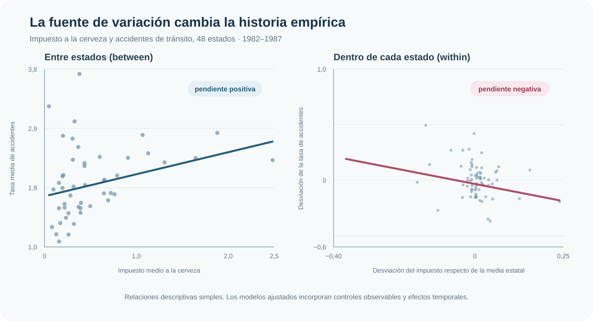
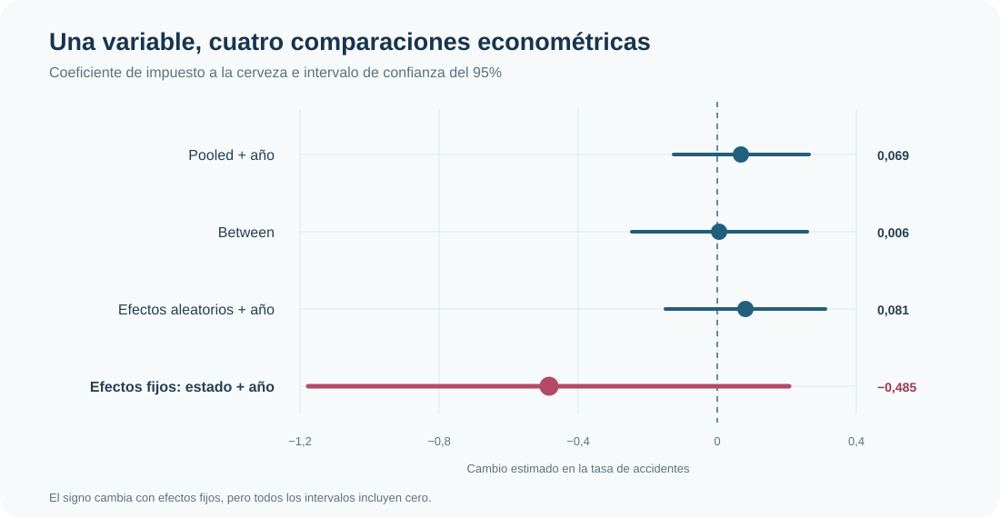

Impuestos a la cerveza y accidentes: por qué between y within cuentan historias distintas
Cómo cambia la comparación empírica al pasar de diferencias entre estados a variación dentro de cada estado
El estimador cambia la comparación que hacen los datos
Entre estados, mayores impuestos a la cerveza aparecen asociados con más accidentes. Dentro de un mismo estado a lo largo del tiempo, la relación cambia de signo. La diferencia no es cosmética: cada estimador responde a una comparación distinta.
Panel balanceado
48 × 6
Estados por años, 1982–1987
Variación within del impuesto
0,052
Desvío estándar dentro del estado
Efectos fijos + año
−0,485
EE = 0,353
Precisión
p = 0,176
IC95%: [−1,176; 0,206]
Pregunta
¿Qué relación existe entre el impuesto estatal a la cerveza y la tasa de accidentes de tránsito, y por qué la respuesta cambia cuando la comparación se hace entre estados o dentro del mismo estado?
El análisis no busca elegir mecánicamente un comando. Busca mostrar una decisión econométrica más básica: identificar de dónde proviene la variación que sostiene cada estimación.
Datos y problema de comparación
Se utiliza un panel balanceado de 48 estados observados durante seis años, entre 1982 y 1987, para un total de 288 observaciones. El resultado es la tasa de accidentes de tránsito por cada 10.000 habitantes y la variable de interés es el impuesto a la cerveza.
Los modelos incorporan controles por condiciones estatales —entre ellos desempleo, ingreso, motorización y regulación— y, cuando corresponde, efectos de año. Aun así, los estados difieren persistentemente en características difíciles de observar: infraestructura, hábitos de conducción, fiscalización o cultura vial. Esa heterogeneidad puede estar relacionada tanto con los impuestos como con los accidentes.
La variable de interés también tiene una estructura marcadamente persistente. Su desvío estándar total es 0,485, casi todo explicado por diferencias entre estados (0,487); dentro de un estado, el desvío estándar cae a 0,052. Por eso la estimación within dispone de una señal mucho más estrecha.
Between frente a within
El contraste visual resume el corazón del ejercicio. El panel izquierdo compara medias estatales: estados con impuestos medios más altos tienden a mostrar una tasa media de accidentes mayor. El panel derecho elimina la media propia de cada estado y pregunta si, cuando el impuesto cambia dentro de ese estado, también cambia la tasa de accidentes. Allí la pendiente descriptiva es negativa.

La aparente contradicción desaparece cuando se reconoce que no son la misma pregunta. La comparación between utiliza diferencias persistentes entre unidades; la comparación within utiliza cambios temporales de cada unidad respecto de sí misma.
Una misma base, cuatro fuentes de variación
| Estimador | Comparación que domina | Supuesto o costo principal |
|---|---|---|
| Pooled OLS + año | Mezcla diferencias entre estados y cambios dentro de ellos | No absorbe heterogeneidad estatal fija |
| Between | Compara medias de largo del período entre estados | Pierde la dimensión temporal dentro del estado |
| Efectos aleatorios + año | Combina variación between y within mediante una cuasi-transformación | Requiere que el efecto estatal no observado sea incorrelacionado con los regresores |
| Efectos fijos de estado + año | Compara cada estado consigo mismo, neto de shocks anuales comunes | No identifica variables invariantes y depende de la variación temporal disponible |
Los tres estimadores que conservan información entre estados producen coeficientes pequeños y positivos. Al absorber la heterogeneidad fija estatal, el coeficiente pasa a −0,485. Sin embargo, el intervalo de confianza es amplio: el cambio de signo es metodológicamente informativo, pero la muestra no permite afirmar una relación negativa precisa.

Por qué efectos fijos cambia la lectura
Los efectos fijos de estado eliminan toda característica estatal constante en el tiempo, observada o no. La comparación ya no enfrenta estados estructuralmente distintos: utiliza solamente cambios del impuesto dentro de cada estado. Los efectos de año, a su vez, absorben shocks comunes a todos los estados.
En la especificación con ambos conjuntos de efectos, el coeficiente del impuesto es −0,485. La misma cifra se obtiene estimando variables indicadoras por estado o aplicando la transformación within; la igualdad exacta también se verifica mediante Frisch–Waugh–Lovell después de residualizar resultado y regresores. Estas equivalencias son una comprobación de implementación, no evidencia adicional a favor de la magnitud estimada.
Lectura dominante
El aporte de efectos fijos no consiste en “corregir” un número positivo para volverlo negativo. Consiste en cambiar el grupo de comparación: de estados distintos a cambios observados dentro del mismo estado. Esa es la razón econométrica por la que cambia la estimación.
Precisión e incertidumbre
El intervalo de confianza del 95% para la especificación con efectos fijos de estado y año es [−1,176; 0,206], con p = 0,176. La evidencia, por tanto, no es concluyente sobre el signo de la relación una vez absorbidas las diferencias estatales permanentes.
La imprecisión tiene una explicación sustantiva: el impuesto varía poco dentro de cada estado. Efectos fijos descarta la abundante variación entre estados porque puede estar contaminada por heterogeneidad persistente; esa mejora en comparabilidad se paga con menos información útil para estimar el coeficiente.
Diagnósticos como apoyo
| Diagnóstico | Resultado | Lectura |
|---|---|---|
| Multiplicador de Lagrange para efecto estatal | 293,94; p < 0,001 | La estructura panel importa; pooled simple no basta |
| Hausman: efectos aleatorios frente a fijos | 87,61; p < 0,001 | Favorece la lectura de efectos fijos, con cautela por advertencia matricial |
| Efectos de estado, prueba conjunta | F = 41,17; p < 0,001 | La heterogeneidad estatal absorbida es relevante |
| Efectos de año, prueba conjunta | F = 20,61; p < 0,001 | También hay shocks temporales comunes relevantes |
El contraste de Hausman presenta una advertencia de rango y matriz no definida positiva. Por eso se utiliza como señal consistente con la importancia de la heterogeneidad estatal, no como regla automática que sustituya la lectura económica del modelo.
Alcance de la evidencia
La especificación de efectos fijos controla características estatales invariantes y shocks anuales comunes, pero no elimina factores omitidos que cambien en el tiempo dentro de cada estado y estén correlacionados con el impuesto. Tampoco resuelve por sí sola simultaneidad o respuestas de política a cambios en seguridad vial.
En consecuencia, el resultado debe leerse como una comparación econométrica de asociaciones, no como una estimación causal del efecto de los impuestos sobre los accidentes.
Conclusión
Este caso muestra por qué en panel no alcanza con comparar coeficientes como si todos provinieran de la misma evidencia. Pooled, between y efectos aleatorios aprovechan en distinta medida diferencias persistentes entre estados; efectos fijos pregunta qué ocurre cuando cada estado cambia respecto de sí mismo.
La lectura final es doble: la relación estimada cambia de signo cuando la fuente de identificación pasa de between a within, pero esa estimación negativa es imprecisa. El aporte más sólido no es un efecto puntual, sino el criterio para entender qué comparación sostiene cada modelo y qué alcance permite defender.